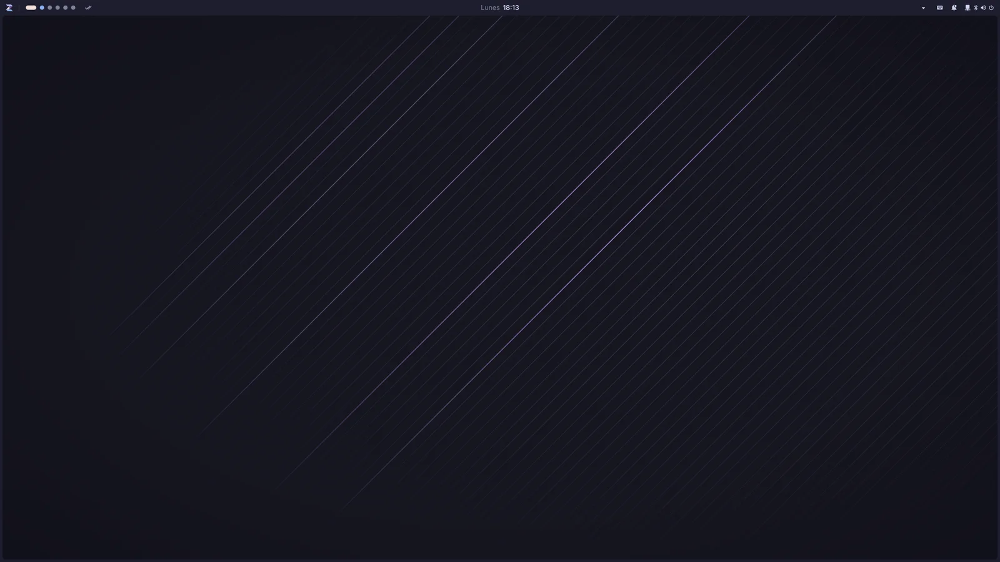
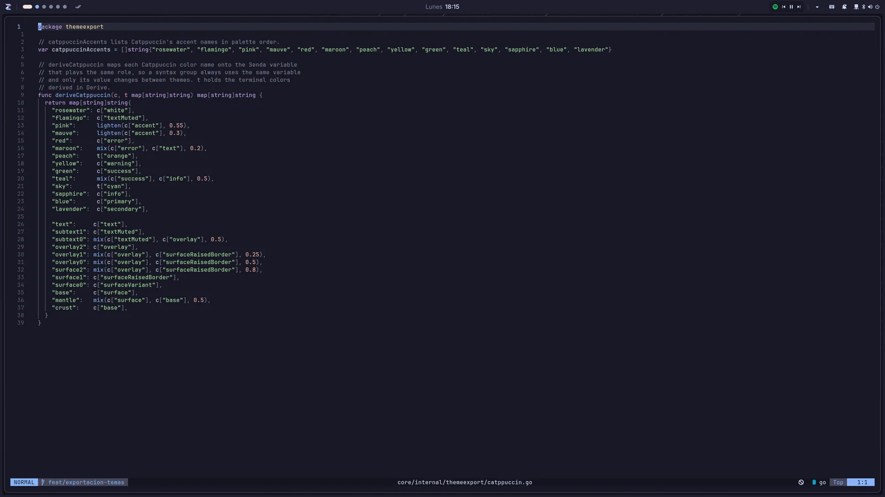
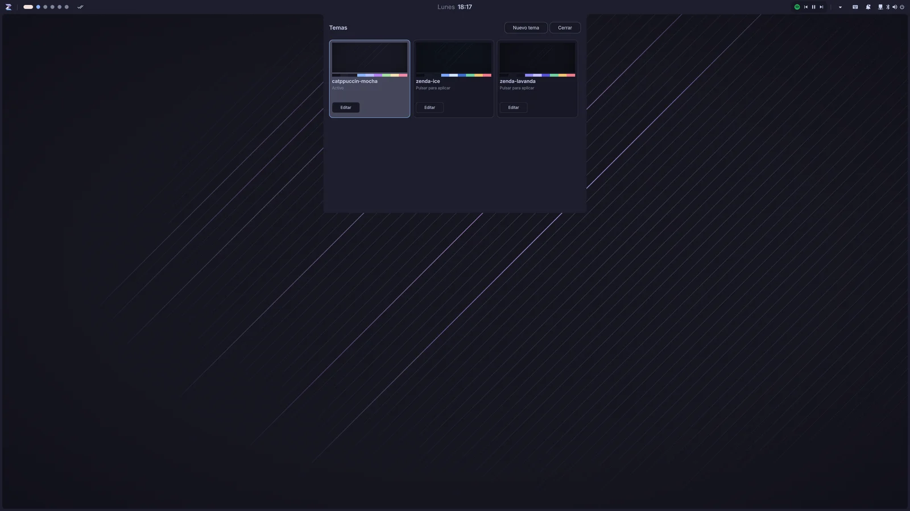

En desarrollo temprano · Arch Linux + Hyprland
Senda.
Senda es una barra superior con widgets y plugins, un centro de control y una bandeja del sistema. La CLI complementa el día a día, pero el centro de todo es la interfaz.
Qué incluye
Una barra que lo controla todo
Barra, notificaciones, centro de control y dashboard propios, con plugins para Discord y Spotify.
-
Barra superior
Espacios de trabajo, reloj, estado del sistema y widgets integrados en la barra de Hyprland.
-
Notificaciones propias
Senda recibe las notificaciones del escritorio: pop-ups apilados, un panel con las pendientes, modo No molestar y descarte deslizando.
-
Centro de control
Un panel desplegable con volumen, dispositivos de audio, Bluetooth y el menú del sistema para bloquear, reiniciar o apagar.
-
Dashboard
Reloj, calendario, agenda de Google Calendar, el tiempo y la música en reproducción en un solo vistazo.
-
Plugins para Discord y Spotify
Controla Spotify desde la barra (pista, reproducir y saltar) y tu llamada de Discord: silencia el micro, ensordécete o mira quién habla.
-
Bandeja del sistema
Iconos de las aplicaciones en segundo plano y sus menús, siempre a un clic.
-
Capturas al instante
Pulsa Impr Pant para congelar todos tus monitores y seleccionar una zona. Al soltar, se copia al portapapeles y aparece una notificación con la captura. Cancela con Esc o clic derecho.
-
Editor de capturas
Abre la captura desde su notificación y ajusta el recorte con las asas. Copia el resultado o guárdalo en PNG cuando lo decidas. El atajo y la carpeta de destino se cambian desde Ajustes.
La CLI complementa la interfaz: también cambia el fondo de pantalla mediante Quickshell y lleva el foco
a una ventana, por ejemplo con senda window focus discord.
Novedades
Captura y personaliza tu escritorio
Capturas con selección y editor integrados, y temas que colorean Senda y tus aplicaciones. Tú decides qué copiar y qué guardar.
-
Temas dinámicos
Elige entre zenda-ice, zenda-lavanda y catppuccin-mocha o crea los tuyos con el editor: colores, fondo y vista previa, aplicados al instante.
-
Un tema para tus aplicaciones
El tema activo se exporta a Kitty, GTK 3 y 4, Qt, KDE y Neovim, con un esquema extenso para sus plugins más usados.
-
Fondos con transiciones
Cada tema trae su fondo de pantalla, que cambia con una transición suave y se recuerda por monitor.
-
Ajustes renovados
Páginas de ajustes rediseñadas con guardado inmediato, y la página de actualización muestra las novedades de cada versión.



¿Quieres probarlo antes que nadie? El canal nightly se compila en cada cambio; elígelo en la sección de instalación.
Cómo funciona
Tres pasos y listo
El instalador deja el binario en tu PATH. A partir de ahí, Senda se mantiene con sus propios comandos.
-
01
Instala el binario
Un único comando descarga la última release, verifica su SHA-256 y lo instala en tu usuario.
-
02
Configura Senda
Con
senda setupse instalan las dependencias, los archivos de Quickshell y la configuración, y arranca la barra. -
03
Mantén todo al día
Con
senda updatesincronizas la barra y la CLI con la última versión publicada.
Instalación
Empieza en un minuto
Pega el comando en una terminal de tu sesión de usuario. No requiere permisos de administrador.
curl -fsSL https://senda.dorlab.net/install.sh | bash
Tras instalar, ejecuta senda setup.
- Linux x86_64
- Wayland
- Hyprland
- Quickshell para la interfaz y el fondo de pantalla